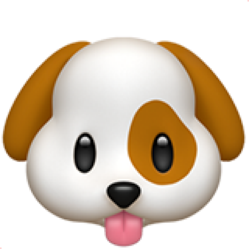
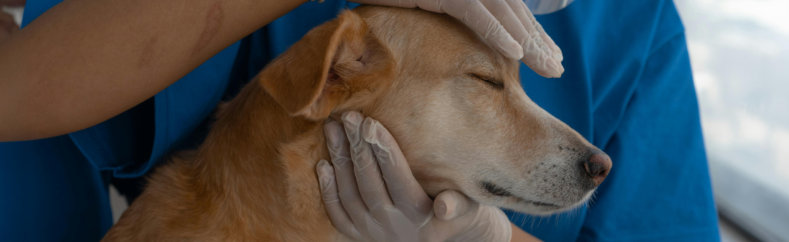
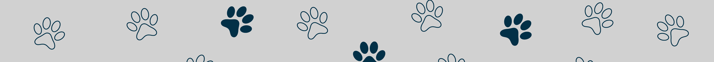

Adoção Responsável
Não se trata apenas de encontrar um lar, mas sim o lar certo. Promovemos um processo seguro, transparente e consciente, garantindo o bem-estar do animal e a preparação do novo tutor.

O projeto "Meu Futuro Amigo" nasceu de um desafio que conhecemos bem em Pernambuco: pessoas com o coração aberto para adotar e animais precisando de um lar não conseguiam se encontrar facilmente. As adoções ficavam espalhadas em processos informais e grupos de redes sociais, enquanto abrigos lutavam por visibilidade e pessoas com ninhadas em casa não sabiam a quem recorrer. Nossa plataforma foi criada para ser a ponte definitiva que une todas essas pontas em um só lugar.
Nossa missão é oferecer dois caminhos principais para a adoção. O primeiro é através do público em geral, permitindo que qualquer pessoa possa criar um perfil seguro, cadastrar um animal que esteja sob seus cuidados e encontrar uma família responsável para ele. O segundo é através da nossa parceria especial com o Abrigo de Cuidado Animal, que oferece animais resgatados e totalmente reabilitados. Ao centralizar tudo isso, criamos um ecossistema completo, tornando o ato de adotar e doar muito mais seguro, transparente e humano para todo o estado.

O Abrigo de Cuidado Animal é o coração e a alma de nossa operação social. Enquanto nossa plataforma se abre ao público, mantemos essa parceria como um pilar fundamental, focado especificamente no resgate de animais de rua e em situação de abandono em Pernambuco. Fundado em 2010, o abrigo se tornou uma instituição de referência no que faz de melhor: dar uma nova chance a quem mais precisa.
Ao navegar em nosso site e ver um animal listado pelo "Abrigo", você tem a garantia de uma adoção de qualidade. Diferente de um cadastro público, esses animais passaram por um processo completo de reabilitação. Isso inclui resgate, exames veterinários, vacinação, castração e um intenso trabalho de recuperação emocional e socialização. Ao adotar um animal do abrigo, você não só leva um amigo para casa, mas também abre espaço para que outro animal possa ser resgatado das ruas e iniciar sua própria jornada de transformação.

Não se trata apenas de encontrar um lar, mas sim o lar certo. Promovemos um processo seguro, transparente e consciente, garantindo o bem-estar do animal e a preparação do novo tutor.
Tudo o que fazemos é movido pelo profundo respeito e amor aos animais. Acreditamos que toda vida importa e que cada animal, com ou sem raça, merece uma história feliz.
Somos a ponte que une quem quer adotar, quem precisa doar e quem resgata. Acreditamos no poder de uma comunidade engajada para transformar o cenário da adoção em Pernambuco.